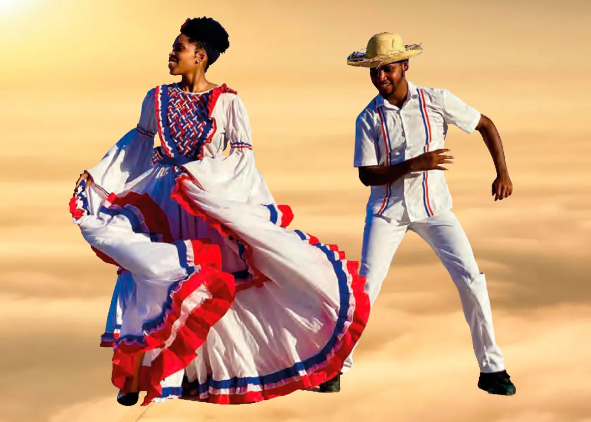

Dios Patria y Liberta
Cultura
no hay lugar como el hogar La Rep Dom. aunque sea pequeña no ha pasado desapersivida en territorio pero grande en pesonas tanto Hombres como Mujeres , Aqui somos una gran cultura pais de la bachata y el merengue, donde existen buenos Peloteos Grandes desportirtas y artista Gente que lucha y le gusta progresar
Historia
La República Dominicana es un país situado en el Caribe, ubicado en la zona central de las Antillas; ocupa la parte central y oriental de la isla La Española. Su capital y ciudad más poblada es Santo Domingo. Limita al norte con el océano Atlántico, al este con el canal de la Mona, que lo separa de Puerto Rico, al sur con el mar Caribe, y al oeste con Haití, que es el otro país situado en La Española. Con 48 448 km² y una población superior a los 11 millones de habitantes, es el segundo país más extenso y poblado de los insulares caribeños, después de Cuba
Clima
La República Dominicana tiene un clima predominantemente tropical donde las lluvias son abundantes, una temperatura media entre los 25 y 35 °C, con pocas excepciones en regiones con una gran altitud, como en Valle Nuevo, donde la temperatura puede descender hasta 3 °C en invierno. El día tiene una duración entre 11 y 13 horas al año, según la temporada. Algunos copos de nieve pueden caer en raras ocasiones en la parte superior del Pico Duarte.
Paisaje

República Dominicana es conocida por tener la topografía más diversa de la región del Caribe. Puedes pasar de una playa a un frío pueblo de montaña a más de 500 metros sobre el nivel del mar en menos de tres horas. La línea costera del país no es un secreto, contando con más de 1,600 kilómetros de costas y cientos de playas impresionantes y de fácil acceso. Lo que es aún más sorprendente es que República Dominicana está flanqueada por una serie de grandes cordilleras, siendo la Cordillera Central la más importante de ellas, y la que alberga el pico más alto del Caribe: Pico Duarte, a 3,087 metros.
Deportes
Pais de buenos deportistas
El béisbol es el deporte nacional en la República Dominicana, aparte de ser el que más satisfacciones le ha dado a los quisqueyanos. El país tiene una liga de béisbol de seis equipos.130 La temporada suele comenzar en octubre y termina en enero. El equipo ganador del Campeonato Nacional de Béisbol adquiere el derecho de representar al país en la llamada "Pequeña Serie Mundial", la Serie del Caribe, evento del cual el país es el que más veces ha ganado, con 20 coronas